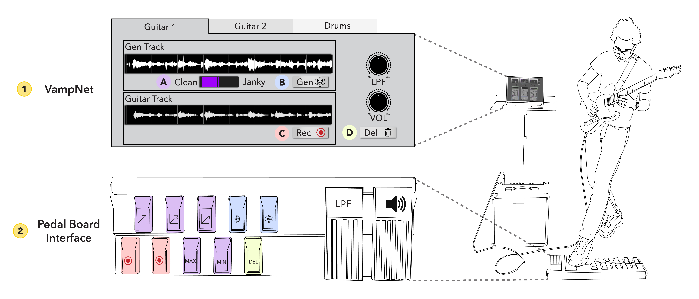
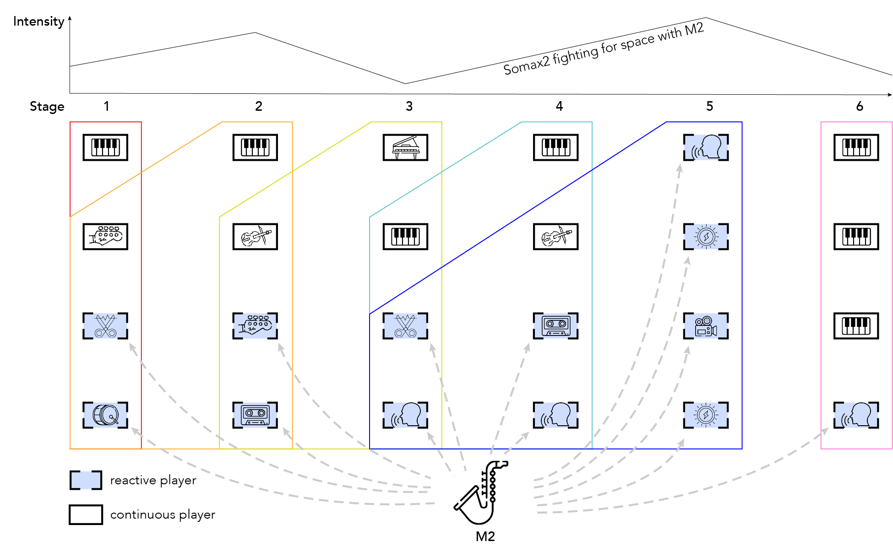
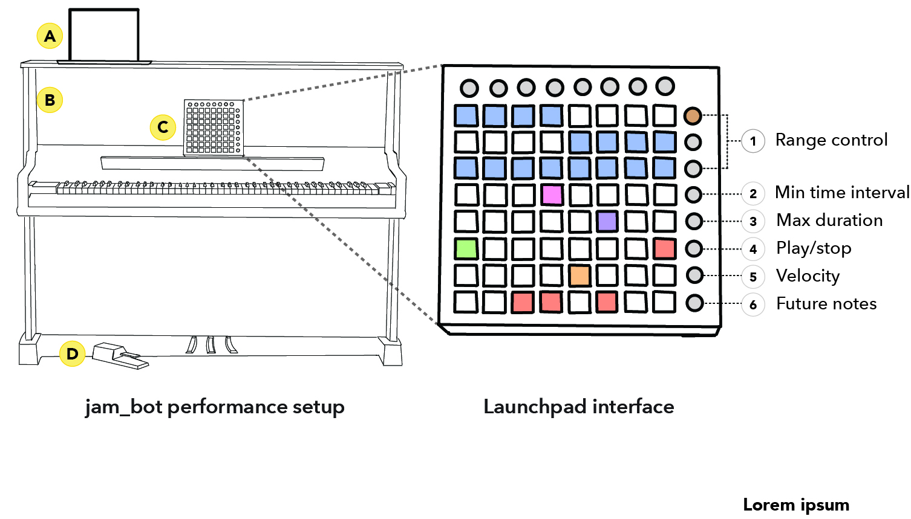

Agents in Concert: What We Learned Bringing AI to the Stage with Jazz Musicians
AI music systems are advancing quickly. Artificial voices, neural timbres, and agents that respond to human performers are increasingly finding their way into live performance. But the detailed, practice-based process of preparing these systems for the stage is rarely documented. Most published work focuses on the final system, not the weeks of iteration, compromise, and discovery that precede a concert.
Researchers tracing trends in the New Interfaces for Musical Expression (NIME) community have noted an "increasing expectation for demonstrable technological advances or quantifiable outcomes in NIME research." Evaluation of these systems has gravitated toward lab-based user studies, crowd-sourced listening tests, and detailed descriptions of the final performance-ready artifact—often at the expense of the practice-based insights that emerge from actually bringing them to the stage. As Pelinski, McPherson, and Fiebrink argue, "Such technoscientific narratives typically focus on the scientific fact or technological artefact, often overlooking valuable insights gained in the process." Parallel calls in HCI advocate for research through artifact creation and in-the-wild studies that integrate technologies into real creative contexts.
In Agents in Concert, we present a longitudinal account of a two-month collaboration between a team of engineers and three jazz musicians (Sebastian on guitar, Matthew on saxophone, and Andrew on piano) working with three experimental AI performance systems: VampNet, Somax2, and the jam_bot. The collaboration culminated in a public concert for an audience of 97, featuring three improvised pieces, each co-performed with a different AI agent. Here, we share a condensed version of what we learned.
Starting with Skepticism
Our musicians came in with reservations about AI in performance. Sebastian felt that prompt-based generative AI workflows diminished his sense of agency as a musician. Matthew questioned the ethics of training data provenance. Both Andrew and Matthew had watched a prior demo of the jam_bot and, while they found the output musically interesting, felt it lacked cohesion with the human performer. Matthew described it as sounding like "somebody added a sample to the song."
We chose to work with jazz musicians deliberately. Improvisation requires reacting to unexpected contributions from other players, and these AI systems introduce a great deal of the unexpected. We also chose to work with only three musicians. Concert preparation is demanding under normal circumstances, and adding experimental AI systems compounds that complexity. Working with a small cohort allowed us to go deep with each musician-system pairing.
The first month was dedicated to exploration. We introduced each system through demos, individual practice sessions, and group jams, meeting weekly for three-hour sessions. Some of the most important moments were unplanned.
During a Somax2 session, we accidentally routed the system's MIDI output to a Yamaha Disklavier, a self-playing grand piano. The result was striking: the AI suddenly had a physical embodiment. The piano keys moved on their own, and the musicians could see the agent's behavior in real time. Matthew shifted from treating Somax2 as a backing track to responding to it as a musical partner. This accident reshaped the trajectory of the project, and the Disklavier became central to both the Somax2 and jam_bot pieces going forward.
The jam_bot, a transformer-based system for real-time co-improvisation, produced its own discoveries. The musicians described watching the Disklavier play the jam_bot's output as "sitting next to a fireplace." But the system could also be overwhelming. Matthew felt it was sometimes "almost too spontaneous, bordering on nonsense." This tension between spontaneity and coherence became a defining theme of the entire project.
Building Toward the Stage
After the first month of exploration, each musician paired with a dedicated engineer and committed to a single system. The approaching concert date transformed the nature of the work. Weekly sessions shifted from open-ended exploration to structured iteration: the musicians would try the latest engineering modifications, then perform a work-in-progress for the full group in a "show-and-tell" format, followed by group discussion.
Each piece took shape around the relationship between the musician and their system.
Sebastian and VampNet: End of Summer. Sebastian wanted full autonomy, with no computer musician assisting him, just his guitar and the system. VampNet transforms recorded audio loops into evolving textures, and Sebastian wanted to harness this capacity in performance. We built a pedalboard that mapped VampNet's controls to foot switches, and developed an automated "clean-to-janky" macrocontrol that ramped up generative intensity over successive loops. This allowed Sebastian to shape compositional arcs (tension, release, crescendo) while keeping his hands on his instrument. The pedalboard went through several iterations: continuous expression pedals proved unworkable because VampNet's processing delay made them unresponsive, which led us to trigger-based automation instead. Each problem surfaced the next design question.

Matthew and Somax2: 6x4. Matthew's piece was the most architecturally complex: 24 Somax2 agents arranged in a 4×6 matrix, each drawing from pre-composed corpora. He initially wanted the ensemble to progress autonomously, inspired by Terry Riley's In C. But the system could not reliably advance through sections on its own, and triggering agents by playing specific notes introduced too much cognitive load during performance. After several weeks of iteration, we introduced Sandra as a computer musician to navigate between sections while Matthew improvised freely. We also developed a TouchDesigner visualization that showed the audience which agents were active and how they related to Matthew's playing. This was an emergent design goal that we had not anticipated at the outset.

Andrew and the jam_bot: Duæl Music. Andrew's piece leaned into the jam_bot's spontaneity. He performed on a Disklavier with the jam_bot generating MIDI output on the same instrument. As he described it, "now I have four hands." We modified the jam_bot's interaction strategy so that Andrew could control when to prompt the system using a sustain pedal, and built a Novation Launchpad interface for adjusting range, velocity, and note density during performance. We also leveraged the jam_bot's ability to generate faster than real time to create a visualization of upcoming notes, allowing Andrew to anticipate what the system was about to play.

Across all three pieces, we observed a recurring pattern: the musicians instinctively sought to constrain the AI's more unpredictable tendencies in order to maintain musical coherence. Yet this unpredictability was often the source of the most compelling musical moments.
The Concert and Reflections
Ninety-seven people attended the concert, and 71 participated in our audience study. Their responses revealed an interesting divide: some felt the AI systems were given too much agency in the performances, while others felt they were not given enough. One audience member captured this well, noting that they could see how much development these tools still needed, but also worrying that once the systems become highly capable, the human element might feel less essential. They found themselves drawn in precisely because of the imperfections.
The musicians' reflections echoed this tension from the performer's side. All three expressed a wish to have given their systems more room. Sebastian wanted VampNet to be more "free and loose" but felt he would have needed more practice time to manage that uncertainty. Andrew felt he underused the jam_bot under performance pressure, defaulting to his own playing rather than engaging the system's unpredictability. Matthew came to view Somax2 not as a tool but as an instrument, one requiring months of dedicated practice, much like learning any new instrument from scratch.
Their advice to future musicians working with these systems was consistent: lean into the uncertainty, identify the distinctly non-human behaviors, and find ways to make them musical. These systems demand the same commitment as learning a new instrument.
A New Practice Emerging
What became clear over the course of this project is that something genuinely new is taking shape. This is not AI replacing musicians, nor musicians using AI as a sophisticated backing track. It is a collaborative medium in which the synthetic agency of these systems opens possibilities that neither human nor machine would reach independently. Our musicians entered the project with skepticism and emerged with a different perspective, not because the technology was seamless, but because embedding it in their creative practice revealed something they could not have anticipated from the outside.
A tradition is forming, and we are still in its early stages.
Read the full paper: Agents in Concert: A Case-Study of Bringing AI to the Stage in Practice
Published at IUI '26: 31st International Conference on Intelligent User Interfaces, Paphos, Cyprus.
Citation:
@inproceedings{10.1145/3742413.3789104,
author = {Brade, Stephen and Ma, Teng and Blanchard, Lancelot and Lecamwasam, Kimaya and Salcedo, Carlos Mariano and Kim, Suwan and Naseck, Perry and Li, Andrew and R Michalek, Matthew and Franjou, Sebastian and Huang, Anna},
title = {Agents in Concert: A Case-Study of Bringing AI to the Stage in Practice},
year = {2026},
isbn = {9798400719844},
publisher = {Association for Computing Machinery},
address = {New York, NY, USA},
url = {https://doi.org/10.1145/3742413.3789104},
doi = {10.1145/3742413.3789104},
booktitle = {Proceedings of the 31st International Conference on Intelligent User Interfaces},
pages = {1340--1361},
numpages = {22},
keywords = {Artificial Intelligence, Music Agents},
series = {IUI '26}
}